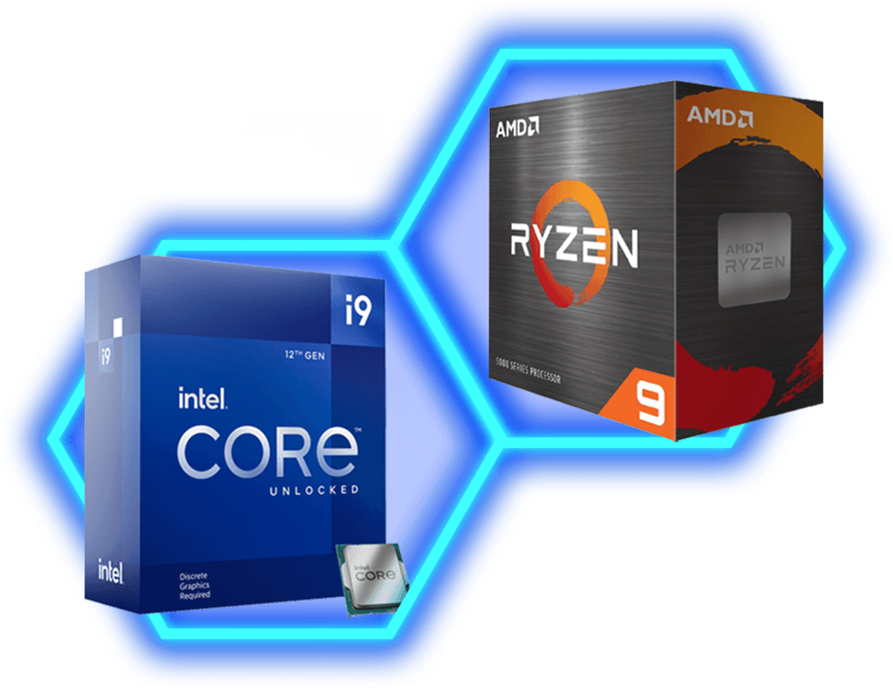
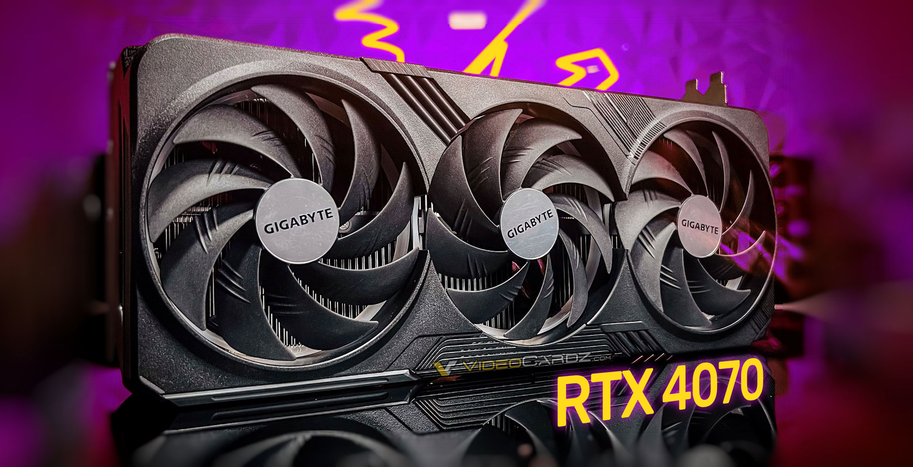
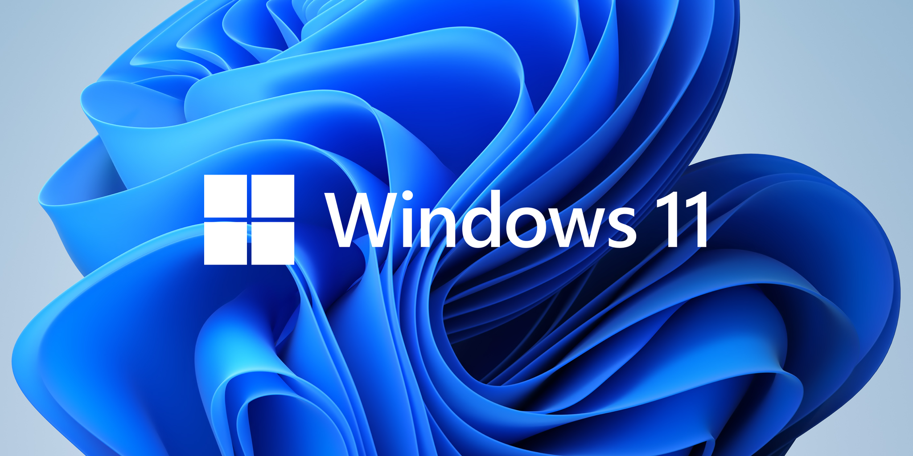
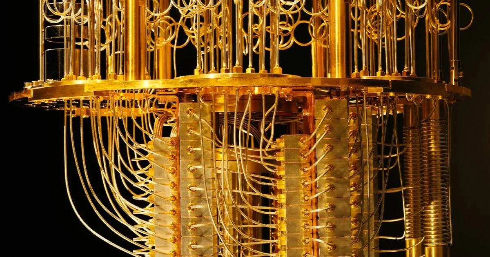

Vizsgálat alatt a Neuralink!
Elon Musk Neuralink nevű agy-számítógép interfésszel foglalkozó cégét vizsgálat alá helyezte az amerikai közlekedési minisztérium. Állítólag nem biztonságos módon csomagolták és szállították a szennyezett hardvert – erősítette meg a CNBC-nek a közlekedési minisztérium szóvivője.
A Pete Buttigieg közlekedési miniszternek csütörtökön küldött levelében közölte, hogy olyan nyilvános feljegyzésekhez jutott, amelyek arra utalnak, hogy a Neuralink 2019-ben rosszul kezelhette a fertőző kórokozókat hordozó eszközöket.
 Több információért kattints ide!
Több információért kattints ide!
Három évtizedes mélypontra kerültek a processzoreladások!
A Mercury Research kiadta a legutóbbi, azaz az előző esztendő negyedik negyedévére vonatkozó CPU-piaci elemzését, amelyben az x86/AMD64-es processzorok igencsak gyér eladási adatai köszönnek vissza. Konkrétan három évtizede nem teljesített ilyen gyengén a szóban forgó szegmens, de még a szezonálisan is 34%-os volt a visszaesés, szekvenciálisan pedig 19%-os.
 Több információért kattints ide!
Több információért kattints ide!
Egyre többen vesznek AMD, egyre kevesebben Intel processzort!
Az AMD számára kedvező, az Intel számára kiábrándító eredményeket közölt a napokban az egyik piackutató intézet. A Mercury Research adatai szerint ugyanis a fekete-piros gyártónak az elmúlt egy évben ismét sikerült növelnie részesedését a PC-s processzorok piacán, miközben társa ugyanebben az időszakban visszaszorulást volt kénytelen elkönyvelni.

Több információért kattints ide!
Már nem lehet túl messze a következő GeForce RTX-kártya rajtja!
Az Ada Lovelace architektúrára épülő modellcsalád első, megfizethetőbb képviselőjének a felső-középkategóriás GeForce RTX 4070 ígérkezik, aminek ugyan továbbra sincs megjelenési dátuma, de a VideoCardz most szállított egy érdekes jelentést, ami némileg tisztázhatja a menetrendet.
A GPU-hírekre szakosodott portál a gyártópartnerek köréből úgy értesült, hogy az Nvidia nemrég frissítette az RTX 4070 sajtóembargóját érintő előírását. A módosítással sajnos továbbra sem derült ki a rajt pontos dátuma, az erről szóló dokumentum alapján viszont valamikor áprilisban várható a kártya megjelenése.

Több információért kattints ide!
Mindössze 196 MB memóriával is elindul a Windows 11, de nem akarod kipróbálni!
A legfrissebb felhasználói statisztikák alapján a Windows 11 több mint egy évvel a megjelenése után is csupán a windowsos számítógépek 18%-án van jelen, a lassú terjedés mögött pedig jó eséllyel a relatíve magasnak mondható hardveres követelményeket, és persze a Windows 10 töretlen népszerűségét sejthetjük.

Több információért kattints ide!
Tényleg itt a minden titkosítást feltörő kvantumszámítógép?
Bő három év telt el azóta, hogy a Google hivatalosan is bejelentette, hogy sikerült elérniük a kvantumfölényt, azaz a kvantumszámítógépük olyan problémát oldott meg, amely a legerősebb hagyományos szuperszámítógépeknek is több ezer évébe tellett volna. A hír akkoriban nagy port kavart, sokan egyből a jelenleg érvényben lévő kriptográfiai modellek bukását vizionálták, azonban a kvantumszámítógépek közel sem voltak olyan fejlettségi szinten, hogy ez bekövetkezzen, és bár azóta történtek komolyabb előrelépések, ez még mindig nem változott.

Több információért kattints ide!